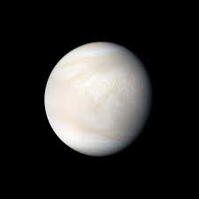

|  |
|
Solo tras el Sol y la Luna, Venus es el objeto más brillante que se puede ver en el firmamento desde la Tierra. Esto propició, ya desde la antigüedad, que por su brillo y belleza los romanos asociaran el planeta con la diosa de la belleza y el amor, Venus, de la cual recibe su nombre. Parte de la intensidad del brillo de Venus es debido a la cercanía con la Tierra, ya que se trata del planeta que más próximo se encuentra de nosotros. También es el segundo planeta más cercano al Sol. Se trata de otro de los 4 planetas rocosos del sistema solar y debido a la gran similitud tanto en tamaño como en densidad con nuestro planeta, en ocasiones es denominado como el planeta gemelo de la Tierra. No obstante, Venus no es tan parecido a la Tierra como cabría esperar. Uno de los mejores ejemplos de ello es su atmósfera, muy espesa y rica en dióxido de carbono. De hecho, la atmósfera de Venus es tan densa que desde su superficie el Sol se vería como un tenue destello de luz. Esto, junto a las densas nubes de ácido sulfúrico que la rodean generan tal efecto invernadero que hace de Venus el planeta más caliente del sistema solar. Así la temperatura en Venus puede alcanzar los 475ºC, suficiente como para derretir el plomo, y la presión a nivel de superficie puede alcanzar las 90 atmósferas. |